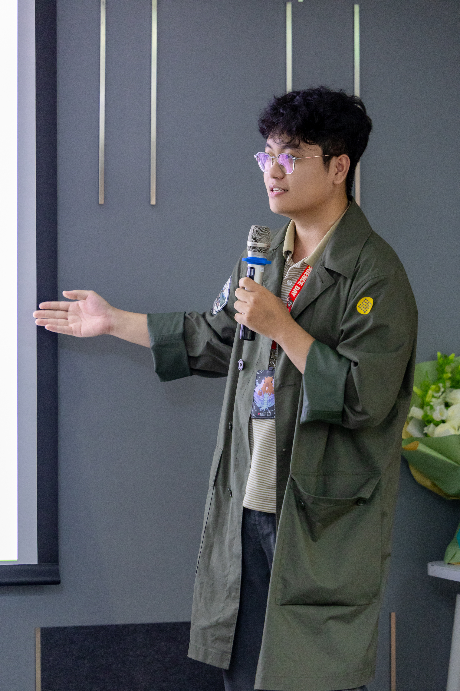
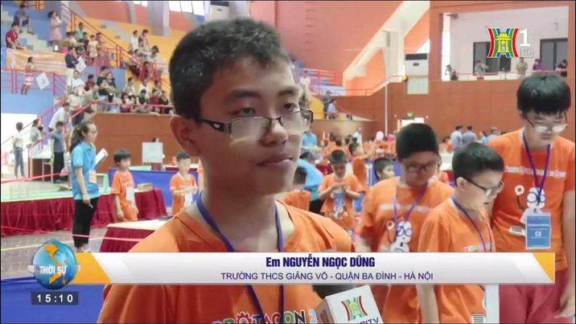
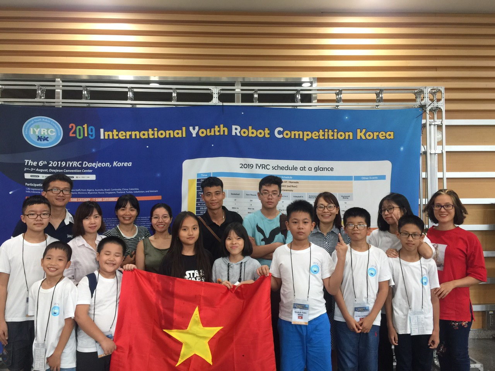

JUNE
NGUYEN
IT · BUSINESS ANALYST
I am June Nguyen, a Year-3 IT student at RMIT. Across the past six years, I have built a consistent record of leadership as a robotics mentor, club executive, AI project lead, and student ambassador, while maintaining a Top 1% GPA. This portfolio is the evidence of that journey.

Expected May 2026 · GPA: 3.6 (Top 1%)
Bachelor of Information Technology. Major: Enterprise Systems Development.
Jul 2022 - Jun 2023
Bachelor of Engineering (Mechatronics). Australia.
Robotacon is Vietnam’s premier educational robotics tournament. In 2018 I led my team to a first-place finish in the Ha Noi regional round, designing the robot’s mechanical structure. Later that year, I competed in IYRC Vietnam and won 1st prize again, this time as lead programmer for the autonomous line-trace routine. Two nationals, two 1st prizes, one same role.
.jpg)
.jpg)



In 2019 I was selected for the Vietnam national team and travelled to Seoul to compete against representatives from over twenty countries. We earned the Excellent Award. I returned in 2020 and we improved, securing the Silver Prize (2nd), the second-highest honor awarded, under pandemic-era constraints.



I finished high school. The original plan was to go to Australia to study Mechatronics. What I did not yet have was real exposure to how people outside the robotics bubble live. So I made a deliberate choice: spend a year in Australia doing handy jobs. Not for the money. The main reason was to put myself in other people’s shoes.

Car wash attendant, kitchen hand, dishwasher. Handy jobs put you face to face with customers in their most ordinary moments, and that is where you actually learn what people want and how it feels to be on the other side of the counter.


I learned how a job works as a small-scale society. My leader always encouraged me, cheered me up, and was always the first to take responsibility when the team made a mistake.


Invited by a former teacher who had moved to Edison An Khanh. Her new school was entering the VEX IQ Robotics Competition and they needed someone to check it out. That two-week sprint turned into three full seasons, twelve teams, and the most sustained leadership commitment of my life so far.


Continued with four completely new VEX IQ teams, shifting emphasis toward autonomous programming and team-spirit development. The season produced the program's first-ever Think Award, alongside two Spirit Awards.


Mentored two student groups for Editech: an AI system for early autism detection (1st Prize) and an AI pipeline for filtering toxic online content (3rd Prize).
In my first year at RMIT I made a deliberate decision to step out of my comfort zone. I joined the Student Ambassadors Team (SAT) and the Student Council. From just these two roles, I have enlarged my networking circle far beyond what I thought possible.


Internal care at IEC (HR Executive Assistant), outward reach at BUFI (External Affairs). I want to consistently develop my ability to look after the people inside an organization while also connecting the organization to the world outside it.


Represented the IT and Software Engineering programs. Supported workshop sessions in Python, AI/ML fundamentals, Arduino robotics, and game development. Guided 3 student teams, all receiving top awards.


Hackathons force you to build something working in 24 to 48 hours. Every hackathon has tightened my ability to lead a team through a problem that does not have a textbook answer.


Led the design of an incentive-based public transport solution. Developed a 5-year strategic plan with 80% government funding and 20% private equity. Delivered a 4-minute pitch that received strong validation for clarity and local relevance.


As a Game Master, I learned to read human emotion in real time: when customers are frustrated or afraid. I had to turn myself into the NPC, control the game flow, and manage the customer's emotional flow simultaneously. That emotional-regulation skill is leadership training of a very specific kind.


Coordinated 200+ daily Scrum sync-up meetings between bank clients (HDBank, MB, Vietcombank) and offshore delivery teams. Shortened meeting duration by 60-75% and accelerated decision-making and blocker removal.


Authoring requirement documentation, driving feature visualization, and leading UAT validation. Achieved 95% UAT pass rate per feature and reduced post-release hotfixes by 40%. Performed market research projected to increase monthly recurring revenue by 25%.


Oct 2025 – Jan 2026 · Project Manager (Scrum) & QA
Led Agile Scrum delivery for 2 software projects. Ran sprint planning, daily stand-ups, and retrospectives. Produced end-to-end project documentation including vision, SRS, product backlog, and acceptance criteria. Drove QA resulting in 90%+ acceptance rate of user stories per sprint.
June 2025 · Global Leadership Experience
Led the design of an incentive-based public transport solution. Developed a 5-year strategic plan with 80% government funding and 20% private equity. Delivered a 4-minute pitch receiving strong validation for clarity and local relevance.
Sep 2023 - Current · IT Support Specialist
Built a web-based inventory management & price-checking app using a scanning workflow. Improved data accuracy by 90% across 1,300+ products, strengthening operational reliability for Thuy Thailand Consumer Goods.

I received the Inspiring Leaders Award, RMIT's Student Leadership Recognition Award for 2025. The award recognizes students who have demonstrated sustained, values-driven leadership across the university community.


Recognized on the RMIT Dean's List for sustained academic excellence, placing in the Top 1% of GPA across the entire SSET program.


One of four students selected from across all RMIT Vietnam faculties to formally welcome the Australian Minister for Education during an official visit to the Ha Noi campus.
Phone: +84 865 949 604
Email: juneng2108@gmail.com
LinkedIn: ngoc-dung-nguyen-june
Portfolio: ngocdungnguyen.github.io
Based in Hanoi, Vietnam. Open to global opportunities.